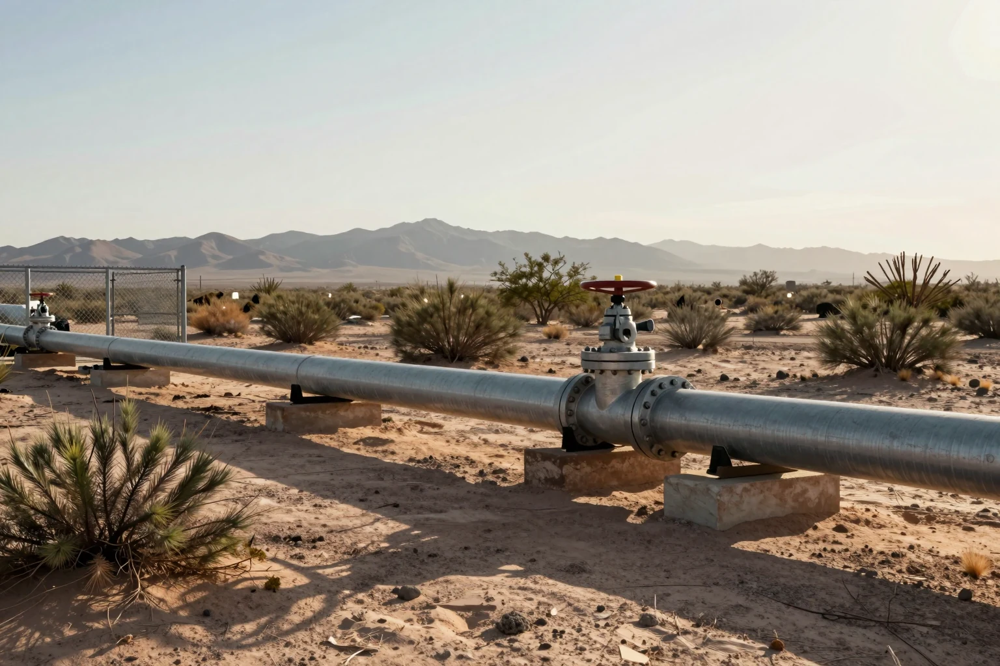

Si se corta el gas que llega de Estados Unidos, México aguanta solo tres días
Entre el 24 de septiembre y el 4 de octubre, un mantenimiento en Texas recortó entre 950 y 1,350 millones de pies cúbicos diarios del gas que México importa por gasoducto. El recorte se registró en el punto de entrega conocido como Inyección Ramones. Una falla imprevista en una estación de compresión de la empresa El Paso Natural Gas, también en Texas, redujo todavía más el envío. México activó una alerta crítica preventiva y la Secretaría de Energía reunió a Cenagas (el operador de los gasoductos del país), a la CFE, a Pemex y al Cenace, que administra la red eléctrica.
El dato más importante lo dio el director de Cenagas: si se cortara todo el gas importado, el país aguantaría unos tres días, porque no tiene dónde almacenarlo. Al día siguiente matizó que no hay riesgo de desabasto, ya que Pemex subió su producción. Pero el problema de fondo sigue ahí: México importa alrededor de 70% del gas que consume. Con ese gas se genera más de la mitad de su electricidad, incluida la que piden los nuevos centros de datos.
- Cenagas
- Centro Nacional de Control del Gas Natural: el organismo público que opera la red de gasoductos que reparte el gas en México.
- Cenace
- Centro Nacional de Control de Energía: el organismo que decide, minuto a minuto, qué plantas generan electricidad para que la red no se caiga.
- Pies cúbicos diarios
- La unidad con la que se mide el flujo de gas natural. Mil millones de pies cúbicos equivalen a unos 28 millones de metros cúbicos.
- Almacenamiento de gas
- Depósitos subterráneos donde un país guarda gas para emergencias. México prácticamente no tiene, así que depende del flujo continuo desde Estados Unidos.
- Centro de datos
- Edificio lleno de servidores que guardan información y hacen los cálculos de servicios de internet, incluida la IA. Funciona día y noche y consume mucha electricidad.
La luz de tu casa, el gas de muchas industrias y buena parte de lo que se fabrica en el norte del país dependen de ese gas. Esta vez no hubo apagones, pero una interrupción larga podría traducirse en cortes eléctricos y en costos más altos para las empresas, que luego los trasladan a sus precios.
México compra fuera siete de cada diez partes del gas que usa, y no tiene dónde guardarlo.
Ver fuente ↗
También: Cenagas: hasta tres días de margen ante un corte: Revista Fortuna (7-oct-2026) ↗
También: Cenagas descarta desabasto; Pemex sube producción: El Imparcial (8-oct-2026) ↗
También: Más de la mitad de la electricidad se genera con gas: El Financiero, columna de Eduardo Guerrero (12-oct-2026) ↗